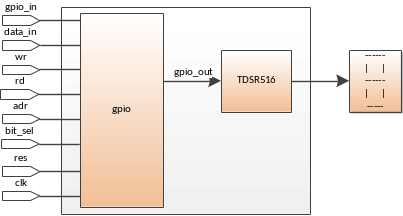
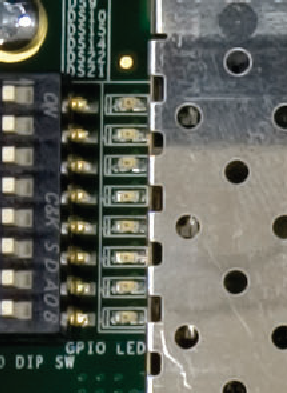

gpio_ref - пример, демонстрирующий возможности gpio в качестве модуля управления 7-сегментным индикатором TDSR516 от компании TELEFUNKEN Semiconductors. Схема подключения gpio к TDSR516 представлена ниже. В примере демонстрируется последовательное выведение на индикатор значения от 5 до 15 в 16-ричном виде.

В примере button2led GPIO используется в качестве контроллера выводов ПЛИС. С одной стороны к нему подключены счетчик и Push-Button кнопки, с другой LED индикаторы.
Последовательность действий для запуска примера:
1. Выполнить 'make ip=gpio xst' для синтеза в ПЛИС, генерации файла прошивки и программирования ПЛИС.
2. К светодиодам подключены 3 разряда счетчика, инкрементирующегося с частотой примерно 1 Гц. Push-Button также подключены к светодиодам и напрямую отражают нажатие на них.

Для использования gpio в ПЛИС требуется задать значение тактовой частоты clk и входные/выходные задержки для выводов блока исходя из характеристик ПЛИС и требований к системе. Следует задать параметры в соответствии с требованиями пользователя. Далее представлены результаты синтеза gpio в различных семействах ПЛИС.
| Stratix II - EP2S60F672C5ES | Quartus II (11.0) | |
| ALUTs | 94 | 1544 |
| Registers | 97 | 499 |
| F(clk)max, MHz | 67 | 58 |
| Virtex 5 - XC5VLX30-3FF676 | Ise 12.3 | |
| Slice LUTs | 113 | 1682 |
| Slice registers | 89 | 353 |
| F(clk)max, MHz | 437 | 380 |
| WIDTH | 8 | 32 |
| IFG_POLARITY | 1 | 0 |
| META_ENA | 0x55 | 0xFFFF0000 |
| SET*ENA | 0 | 1 |
| CLR*ENA | 0 | 1 |
| INV*ENA | 0 | 1 |
| READ*ENA | 1 | 1 |
| WRITE*ENA | 1 | 1 |
| *INIT | 0 | 0 |
| REGISTERED_OUTPUT | 0 | 0 |
Для оценки используемых ресурсов gpio был синтезирован на библиотеке Artisan 90 нм.
| Тип | Значение | |||
|---|---|---|---|---|
| Триггеры | 81 | 209 | 417 | 321 |
| Логические вентилм | 172 | 810 | 1638 | 691 |
| Площадь, мкм*мкм | 4158 | 14039 | 28124 | 16271 |
| Число NAND2 эквивалентных вентилей | 754 | 2544 | 5095 | 2948 |
| Тактовая частота clk, МГц | 363 | 262 | 253 | 337 |
| WIDTH | 8 | 16 | 32 | 32 |
| IFG_POLARITY | 1 | 0 | 1 | 0 |
| META_ENA | 0x0 | 0xFFFF | 0xFFFFFFFF | 0x0 |
| SET*ENA | 0 | 1 | 1 | 0 |
| CLR*ENA | 0 | 1 | 1 | 0 |
| INV*ENA | 0 | 1 | 1 | 0 |
| READ*ENA | 0 | 1 | 1 | 0 |
| WRITE*ENA | 1 | 1 | 1 | 1 |
| *INIT | 0 | 0 | 0 | 0 |
| REGISTERED_OUTPUT | 0 | 0 | 0 | 0 |
Для обеспечения корректного синтеза gpio необходимо задать требуемую тактовую частоту clk, входные/выходные задержки остальных входов/выходов относительно clk, согласно применению блока. Схема синхронна и соответствует требованиям DFT. Процент тестового покрытия дефектов типа Stuck-at составляет не менее 99 % для представленных выше конфигураций.
Входные и выходные задержки должны выбираться исходя из применения схемы. Рекомендуется использовать значение не менее 40% от периода синхросигнала.
Верификация gpio проводится с помощью тестового модуля gpio_tb. В процессе теста проверяются следующие проверки:
gpio_tb показывает следующие результаты по покрытию кода:
| Тип покрытия | Количество проверок | |
|---|---|---|
| Block | 173/173 (100%) | 65/89 (73%) |
| Expression | 578/684 (84%) | 242/540 (45%) |
| Toggle | 4748/4781 (99%) | 482/1299 (37%) |
|
WIDTH=32 IFG_POLSRITY=1 META_ENA=0xFFFFFFFF SET_*_ENA=1 CLR_*_ENA=1 INV_*_ENA=1 READ_*_ENA=1 WRITE_*_ENA=1 *_INIT=0 REGISTERED_OUTPUT=0 |
WIDTH=16 IFG_POLSRITY=1 META_ENA=0xFFFF SET_*_ENA=0 CLR_*_ENA=0 INV_*_ENA=0 READ_*_ENA=1 WRITE_*_ENA=1 *_INIT=0 REGISTERED_OUTPUT=0 |
|